Technical proof complete. Premium quality rejected. The bay is recognizable, but northern fingers, small recesses and the oversized Freehand island remain inaccurate. Zero calibration residual is not independent coastline accuracy.
108 tests passed. 37 editable Areas / 674 nodes. Native UI PNGs match archive and database reopening. Primary, Campfire and product code unchanged. Freehand was performed by the user; other resumed edits were native editor actions.
Report · Eight conclusions and scores · Runtime recovery · Tests · Metrics · Validation · Editable project · Native PNG
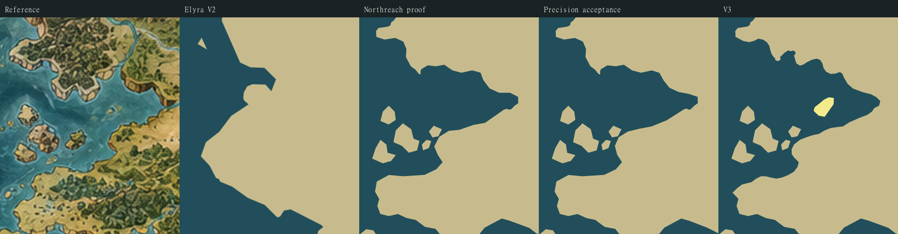
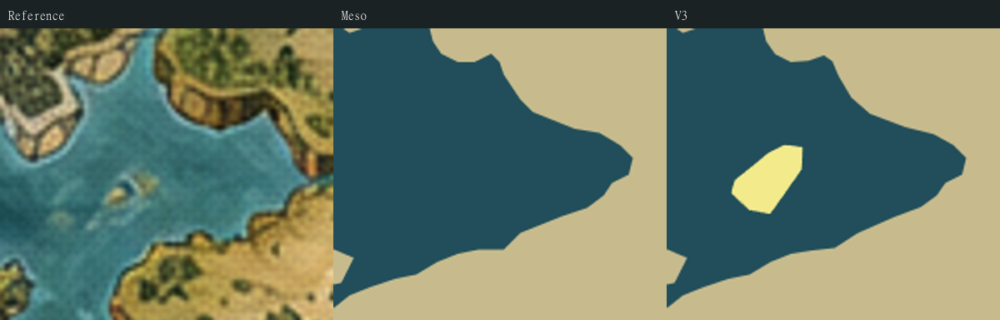
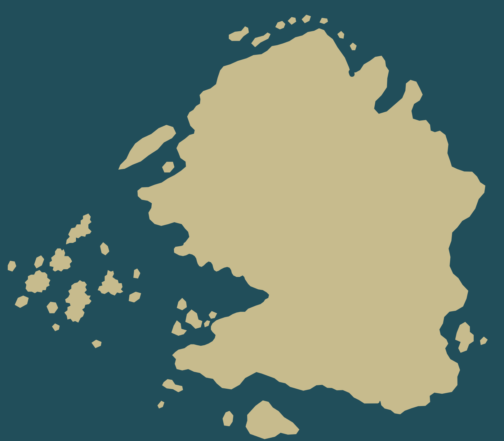
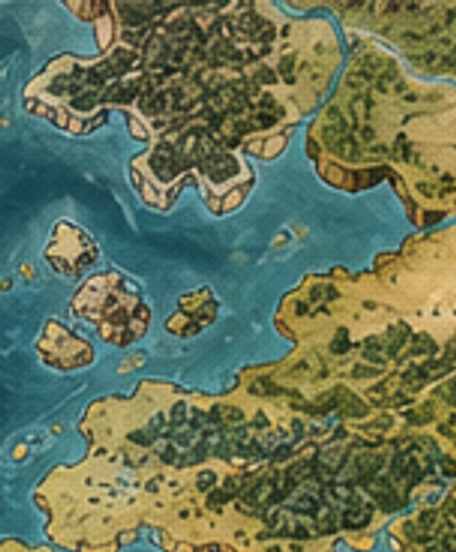
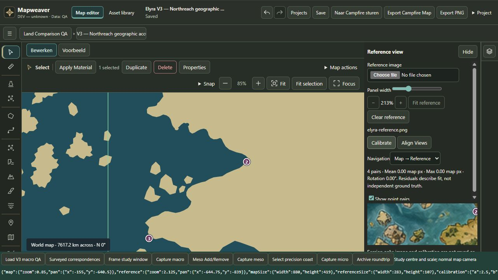
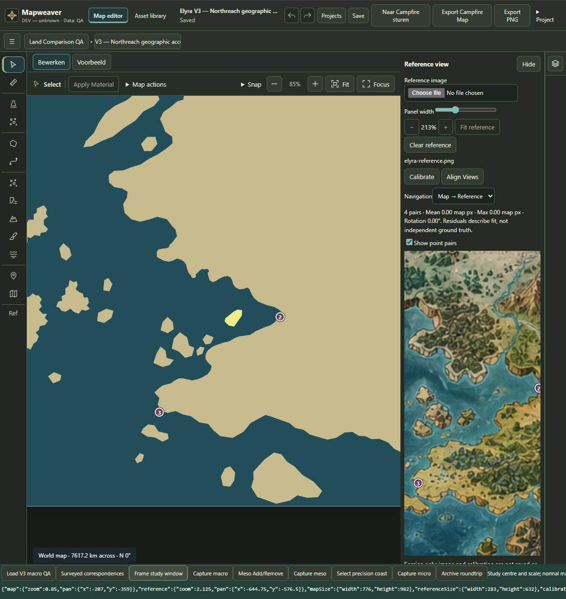
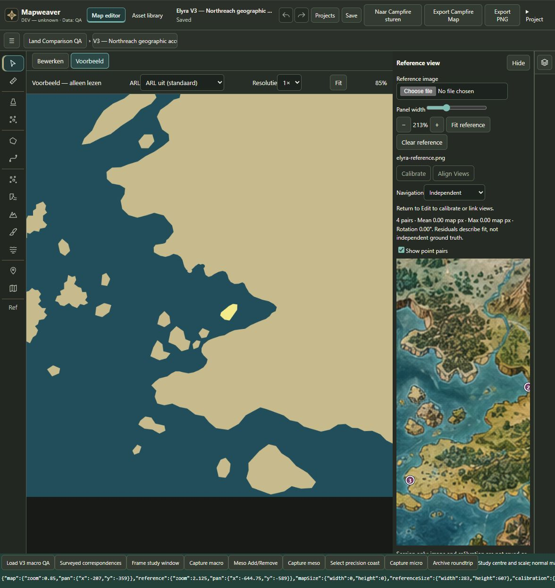
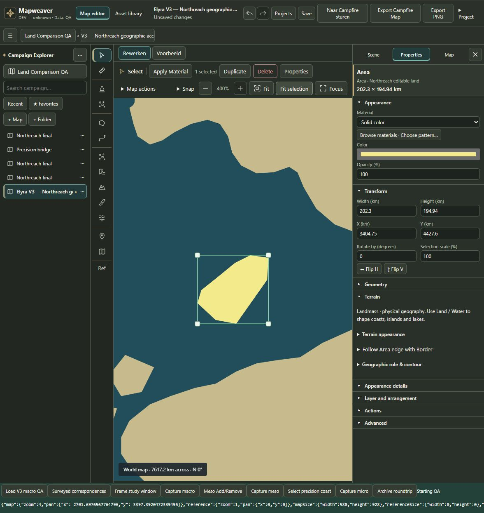
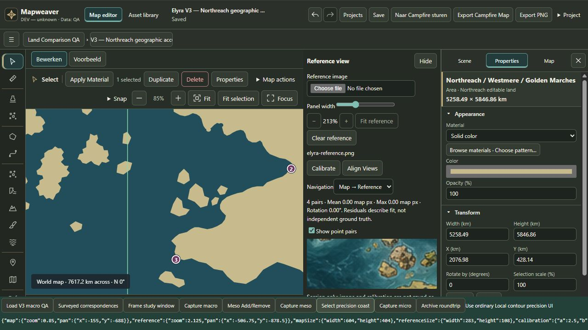
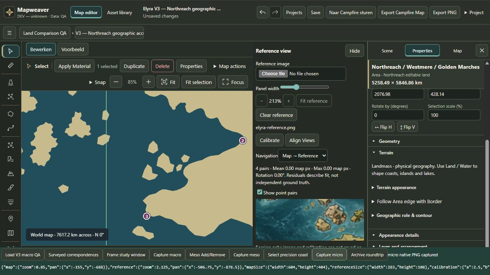
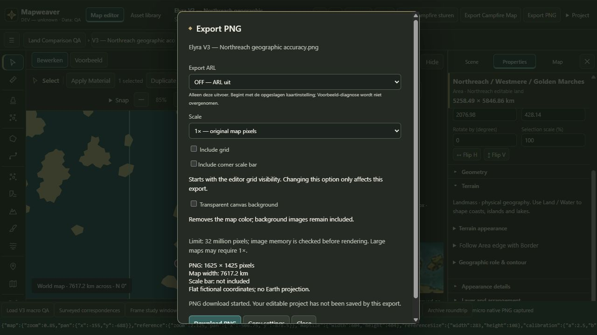
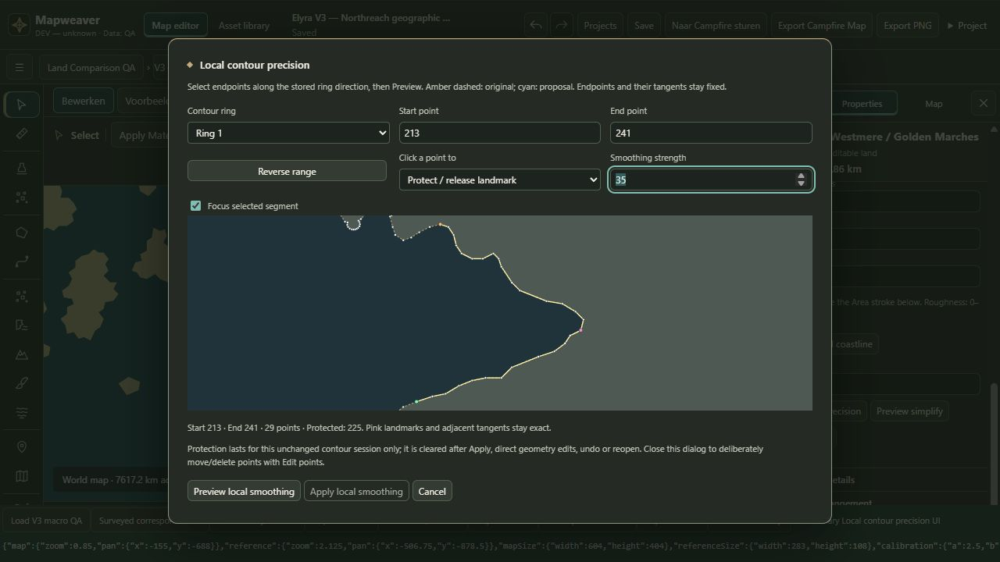
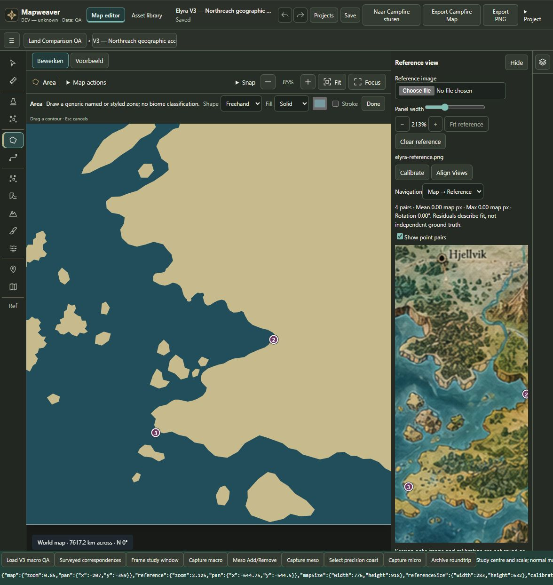
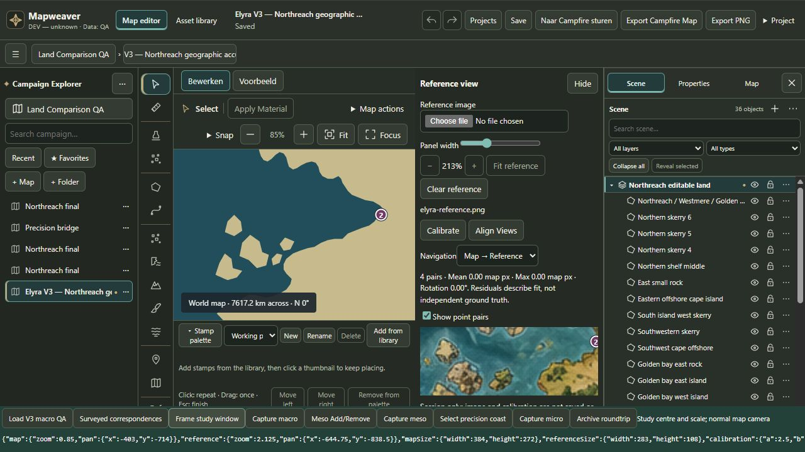
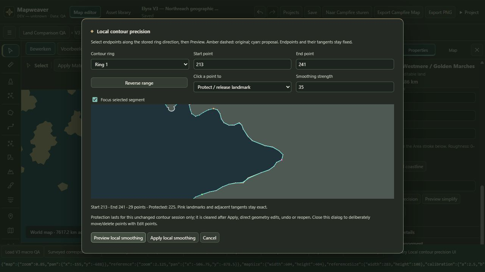
No merge, push, Windows package or Campfire publication.